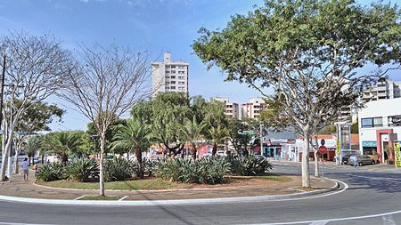

Valinhos
Conhecida como Capital Nacional do Figo Roxo, a cidade de Valinhos, na região metropolitana de Campinas, também tem se destacado na agricultura pela produção de goiaba, sendo a maior produtora do país. Trata-se de um município jovem, fundado em 1953. Tem em torno de 107 mil habitantes e IDHM de 0,819.
Valinhos possui 2 grandes locais para eventos e shows. O primeiro e mais antigo é o Parque Municipal Monsenhor Bruno Nardini, onde é realizado anualmente a Festa do Figo e Expogoiaba. O parque oferece infraestrutura para comportar grandes shows. Um dos últimos shows da Banda Mamonas Assassinas foi realizado nesse local com a presença de 80 mil espectadores. Outro local utilizado para eventos culturais da cidade é o CACC (Centro de Artes Cultura e Comércio) “Adoniran Barbosa”, que fica ao lado da rodoviária. O CACC foi inaugurado em 16 de Agosto de 2008, após a recuperação da estrutura metálica existente ao lado da rodoviária, que ficou por mais de 10 anos abandonada. O local possui palco e camarins e é destinado a atividades culturais, religiosas, feiras e exposições.
